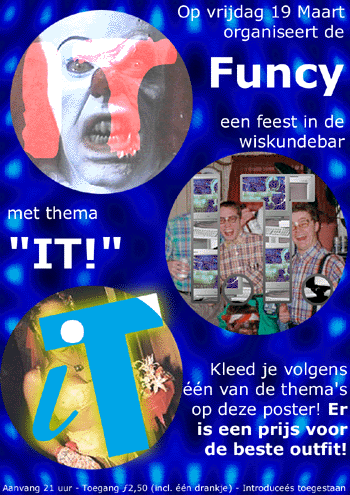

Het eerstvolgende Funcy feest zal plaatsvinden op donderdag 17 mei met als thema OPBLAASBAAR.
Dit is dus op dezelfde dag als de grote ledenactiviteit. Komt allen!
Weet jij een leuk thema voor een volgend feest? Mail dan de funcy!


Dit is de poster van ons eerste feest, 19 maart 1999 en van het laatste feest op 20 oktober 2000.
| Mail ons op funcy@ch.twi.tudelft.nl |